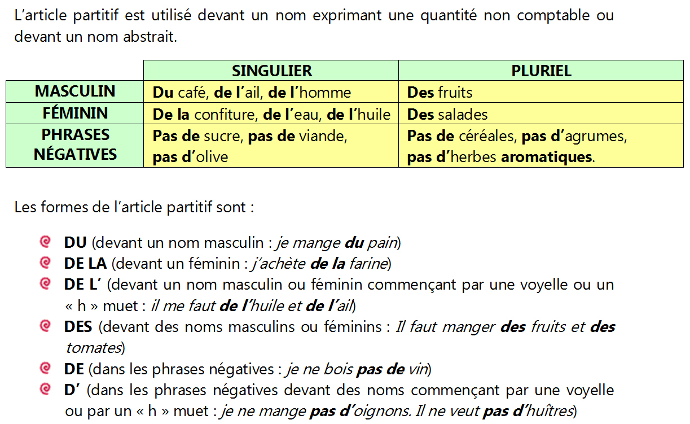

Gastronomie
Grammaire Articles partitifs
L'article partitif

Complétez les phrases avec le partitif qui convient:
Pour en savoir plus!
Pour réviser: https://www.lepointdufle.net/p/articles.htm#articles
Régi par la licence Creative Commons: Licence d'attribution en partage identique 4.0